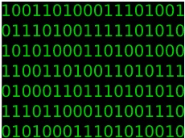

Het Binair Stelsel
De basis van alle computers: communiceren in enen en nullen.
⬅ Terug naar Hoofdpagina
⚡ Hoe werkt het Binair Stelsel?
Computers begrijpen geen menselijke taal of gewone getallen zoals wij die kennen. Van binnen werken microprocessoren met piepkleine schakelaars: er staat spanning op (AAN) of niet (UIT). Daarom gebruiken computers het binaire stelsel (het tweetallig stelsel), dat alleen bestaat uit de getallen 0 en 1.
💡 0 = Uit (Geen stroom)
⚡ 1 = Aan (Wel stroom)
📦 8 Bits = 1 Byte
🔢 Omrekenen van Binair naar Decimaal
In het dagelijks leven gebruiken wij het decimale stelsel (10 getallen: 0 t/m 9). Bij binair heeft elke plek een waarde die steeds verdubbelt van rechts naar links:
📊
Bit-waarden (van links naar rechts):
128 — 64 — 32 — 16 — 8 — 4 — 2 — 1
128 — 64 — 32 — 16 — 8 — 4 — 2 — 1
✏️
Voorbeeld: 00001010
Er staat een 1 bij 8 en bij 2. Samen is dat: 8 + 2 = 10!
Er staat een 1 bij 8 en bij 2. Samen is dat: 8 + 2 = 10!
🎮 Oefen met Binary Bonanza!
Klik op de afbeelding hieronder om de Binary Game te spelen en je binaire omrekenskills te testen: